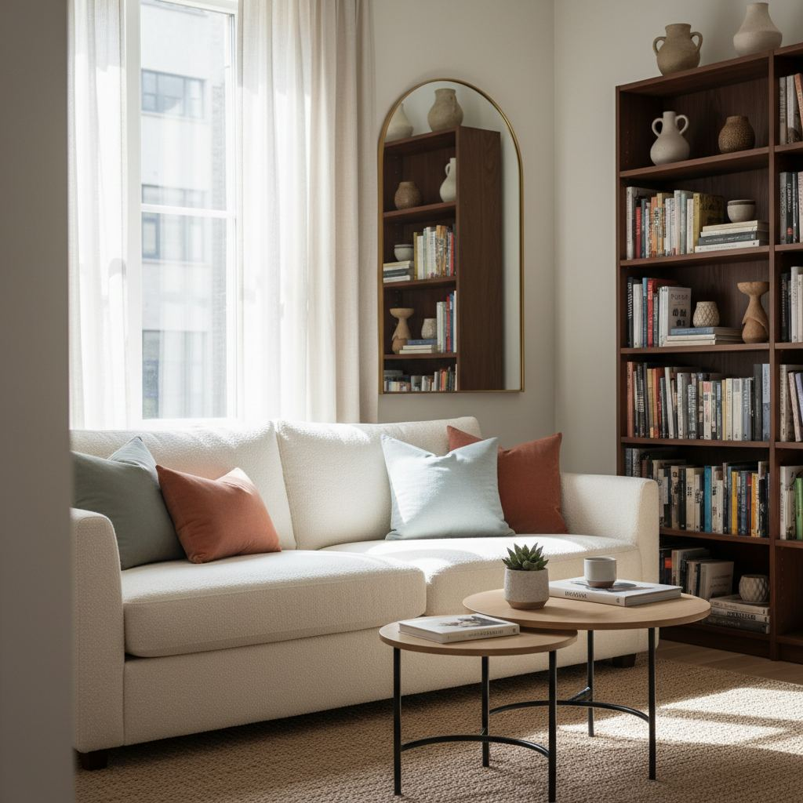

Small Living Room Layout Ideas That Actually Work

Small living rooms are not a design problem — they are a planning problem. Every square foot has to earn its place, which means the layout matters far more than the individual pieces you buy. In this guide, I walk through the exact process we use on styling shoots to plan a room that feels open, functional, and calm.
Start with a focal point
Every room needs a visual anchor. In a small living room, this is usually a window, a fireplace, or a media wall. Choose one and orient your main seating toward it. Trying to face two focal points at once is the single most common reason small rooms feel chaotic.
If your room has no natural focal point, create one. A large piece of framed art above the sofa, a tall bookcase, or a single statement light fixture all work well and cost far less than rearranging structural features.
Measure before you shop
Write down the room's length, width, ceiling height, window heights, door swings, and radiator positions before you look at a single sofa. Tape the outline of any large piece on the floor with painter's tape and live with it for a day. It sounds fussy — it saves a lot of returns.
Sofa placement rules
In a small room, the sofa is almost always the largest object, so its placement dictates everything else. Three placements work reliably:
- Sofa against the longest wall, facing the focal point. Simple, symmetrical, and generous with walking space.
- Sofa floated 12–18 inches from the wall with a slim console behind it. This adds storage and depth in narrow rooms.
- Small sectional tucked into a corner, opening toward the focal point. Best when you need extra seating without adding a second chair.
The right rug size
A rug that is too small is the fastest way to shrink a room visually. As a working rule, at least the front legs of every seat should sit on the rug. In most small living rooms that means an 8x10 — smaller than that and the seating looks like it is floating on a raft.
Lighting in layers
A single overhead light flattens a room. Aim for three light sources at three heights: an overhead fixture, a floor or table lamp at head height, and a low light such as a candle or picture light. Put every fixture on a warm bulb (2700K) and, if possible, a dimmer.
Storage that disappears
Closed storage is your best friend in a small room. A lift-top coffee table, a media unit with doors, and a bench with a hollow base all give you real cubic feet of storage without adding visual weight. Open shelving looks great in photos but tends to attract clutter fast.
Common mistakes to avoid
- Buying furniture that is deeper than it is wide — it eats the walking path.
- Choosing a sofa with a high back that blocks sightlines to windows.
- Hanging art too high; the center should sit at about 57 inches from the floor.
- Skipping window treatments — bare windows read as unfinished, not minimal.

Incorporate Multifunctional Furniture
For small living rooms, every piece of furniture should earn its keep. Opt for items that serve multiple purposes. A storage ottoman, for instance, can function as extra seating, a coffee table (especially with a tray atop), and discreet storage for blankets, remote controls, or magazines. Look for ottomans with internal dimensions around 20"x20"x15" for optimal utility. A sleeper sofa, while a larger investment, instantly transforms a living room into a guest room. Prices for quality sleeper sofas can range from $800 to $3,000, but the versatility is invaluable in tight spaces. Consider nesting tables; a set of three typically measures 20"W x 15"D, 16"W x 13"D, and 12"W x 11"D allowing them to be pulled out for drinks or snacks and then tucked away when not in use. This strategy allows you to maintain an open feel while still having necessary surfaces at hand.
Similarly, a console table behind a sofa can double as a desk or bar area. Choose one with a slim profile, around 12-14 inches deep, to avoid crowding the walkway. These often feature drawers or a lower shelf, providing additional storage without visual bulk. Wall-mounted shelves are another excellent option, freeing up floor space. Instead of a traditional bulky TV stand, consider a wall-mounted TV with a slim floating shelf underneath for media components. This minimalist approach creates a sense of airiness.
Play with Vertical Space
When floor area is limited, the only direction to go is up. Utilizing vertical space draws the eye upward, making the room feel larger and more expansive. Think tall, narrow bookshelves. A slender bookcase measuring 24"W x 12"D x 72"H can provide significant storage for books, decorative objects, and even small plants, without encroaching on the room’s footprint. Opt for open shelving or glass-front cabinets to maintain a light, airy feel; solid doors can make the room appear heavier. Installing floating shelves is another effective strategy. Instead of a large, heavy entertainment unit, mount a series of sleek shelves above your television for display items or books.
Consider installing art or mirrors higher on the walls than you might typically. An oversized mirror (e.g., 36"x48") hung vertically can reflect light and expand the perceived depth of the room. When choosing curtains, hang them as close to the ceiling as possible, extending them to just kiss the floor. This creates an illusion of height and elongates the windows. For a standard 8-foot ceiling, choose curtains with a length of at least 96 inches. Fabric choice matters here too; lighter, sheerer fabrics like linen or cotton blends prevent the window treatments from overwhelming the room.
Strategic Color Palettes
The colors you choose can dramatically impact how large or small a room feels. For small living rooms, stick to a light and cohesive color palette. Whites, off-whites, pale grays, and soft pastels like very light blues or greens are your best friends. These colors reflect light, making the walls recede and creating a sense of spaciousness. Avoid stark, cold whites; instead, opt for warmer undertones, such as Benjamin Moore's 'White Dove' or Sherwin-Williams' 'Accessible Beige,' which provide softness. Paint ceilings a slightly lighter shade than the walls, or even the same color, to blur the lines between wall and ceiling, further extending the perceived height.
- Choose a monochromatic scheme to create a seamless flow and reduce visual clutter.
- Use darker accents sparingly for contrast, perhaps in throw pillows (18x18 inches for a sofa) or a single piece of artwork.
- Consider painting trim and doors the same color as the walls to eliminate abrupt breaks in color, making the room feel expansive.
- Incorporate reflective surfaces like mirrors or metallic finishes to bounce light around and enhance the brightness.
When selecting furniture, choose pieces in colors that blend with your wall palette. A sofa in a similarly light fabric (e.g., a cream linen or a light gray performance velvet) will integrate seamlessly rather than creating a stark visual block. If you desire color, introduce it through smaller accessories that can be easily swapped, allowing for seasonal refreshes without a major overhaul.
Embracing Negative Space
Negative space, or the empty areas between and around objects, is crucial in a small living room. Clutter is the enemy of small spaces, making them feel cramped and overwhelming. The goal is to select fewer, more impactful pieces and allow them room to breathe. Don't feel compelled to fill every corner or wall. For example, instead of a gallery wall, choose one statement piece of art (e.g., a 24"x36" abstract print) that grabs attention without visual noise. Ensure there's enough space – ideally 18-24 inches – between furniture pieces to allow for comfortable movement. A common mistake is pushing all furniture against the walls; sometimes pulling a smaller sofa a few inches away from the wall can actually make the room feel larger by creating a sense of depth and air circulation.
The "less is more" philosophy applies to decorative items as well. Instead of a tabletop full of knick-knacks, curate a small collection of 1-3 well-chosen items on your coffee table or shelf. For instance, a beautifully bound book, a small ceramic vase with a single stem, and a scented candle. Clear surfaces instantly convey a sense of order and space. Even in tiny living rooms, aiming for open floor areas and clear sight lines contributes significantly to the feeling of spaciousness. Walkways should be at least 30 inches wide to ensure comfortable passage.
Leveraging Natural Light
Natural light is a powerful tool for expanding a small living room. Maximize it by keeping windows unobstructed. If privacy isn't a major concern, consider foregoing heavy drapes entirely, or opt for sheer curtains that allow light to filter through while still offering a touch of softness. For instances where privacy is essential, roller blinds or Roman shades that can be retracted fully above the window frame are ideal. These options practically disappear during the day, letting in maximum light.
Position furniture strategically to avoid blocking windows. A low-profile sofa, for example, can be placed under a window without significantly impeding light. Mirrors, particularly large ones (e.g., 36”x48” or 48”x60”), are transformative when placed opposite a window. They reflect not just the light, but also the view outside, effectively doubling the perceived size of the window and bringing the outdoors in. This technique is especially effective for rooms with limited natural light sources. Consider an antique mirror for added character, or a frameless one for a modern, sleek effect. Prices for large, good quality mirrors range from $150 to $500, making them a relatively affordable high-impact solution.
Key takeaways
- Pick one focal point and orient seating toward it.
- Measure, tape it out, live with it for a day before buying.
- Get the rug size right — at least front legs on the rug.
- Layer light at three heights on warm bulbs.
- Choose closed storage over open shelves.
Frequently asked questions
What is the smallest sofa I can use in a living room?
A loveseat around 52–60 inches wide is the practical minimum for two adults. Anything smaller reads as an accent chair and struggles to anchor the room.
Should a small living room use a light or dark color?
Both work. Light neutrals reflect more light and feel airy; deep, saturated colors make a small room feel intentional and cocoon-like. Avoid a wishy-washy mid-tone — it flatters neither approach.
Do I need a coffee table in a small living room?
Not necessarily. Two nesting side tables often work better; they can be pulled apart when guests visit and pushed together when you need surface space.

Sophia Bennett is a certified interior stylist and the senior editor at Styleire. She has spent more than eight years helping homeowners and renters create warm, functional interiors, with hands-on experience across small city apartments and family homes. Her work has been informed by close collaboration with independent designers, craftspeople, and product testers.
View full profile →Related reading

How to Choose a Sofa: The Complete Buyer's Guide
A good sofa lasts fifteen years. Here is how to make sure the one you buy is one of them.

Living Room Rug Size Guide (With Real Room Examples)
A too-small rug is the most common decorating mistake. Here is how to size a rug for any living room layout.

How to Build a Warm Neutral Color Palette for Your Home
Warm neutrals are the safest and most flattering base for a whole-home palette. Here is how to build one on purpose.